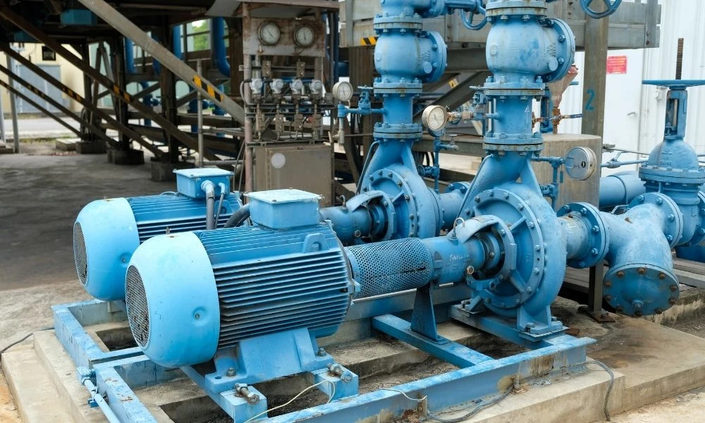
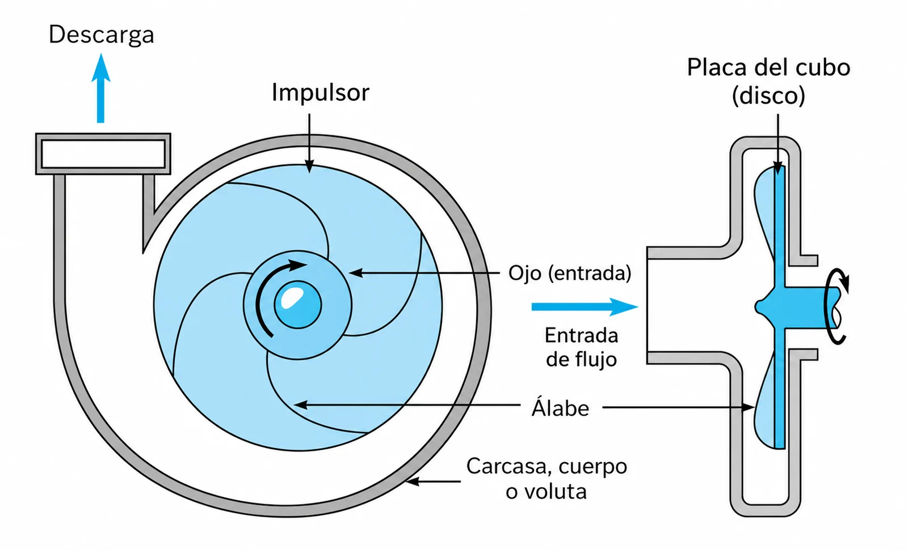
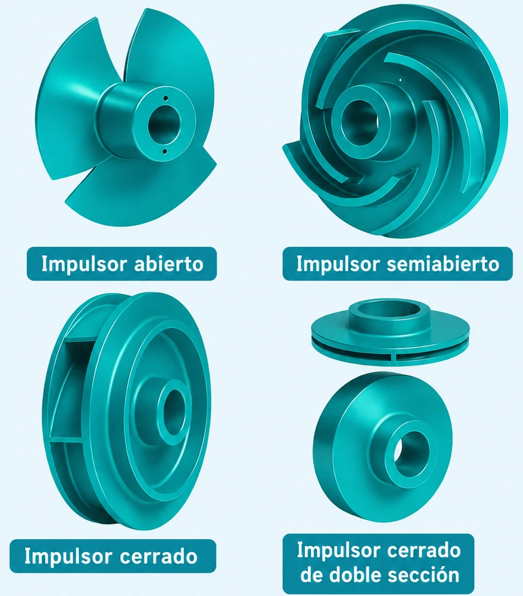
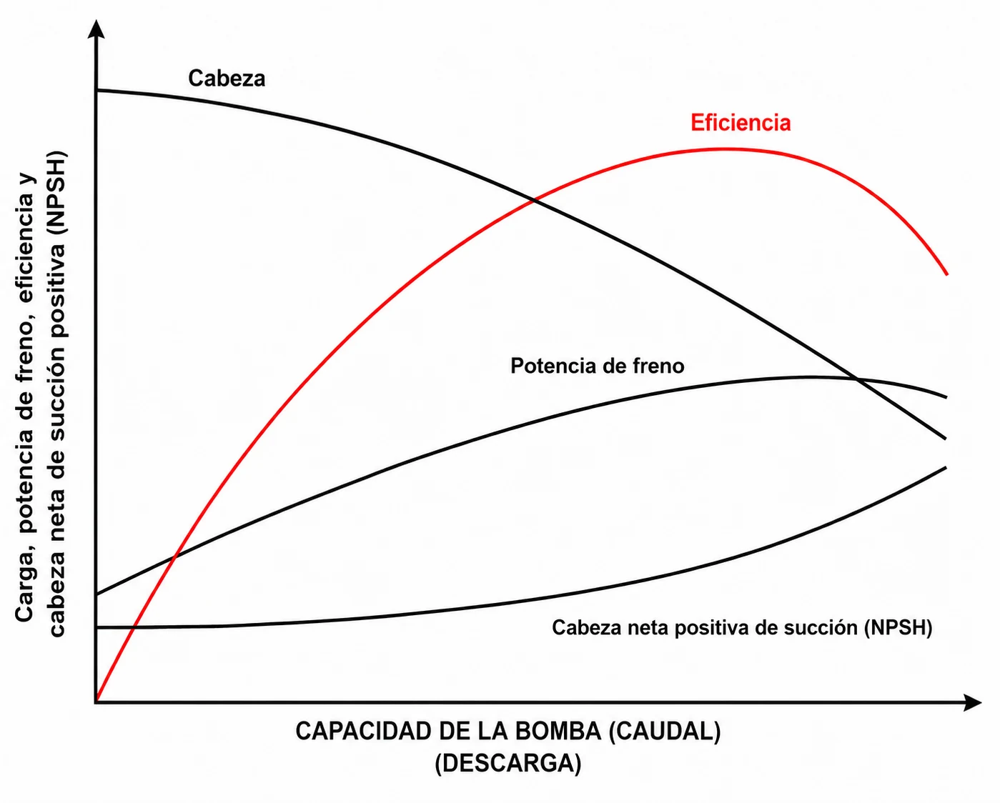
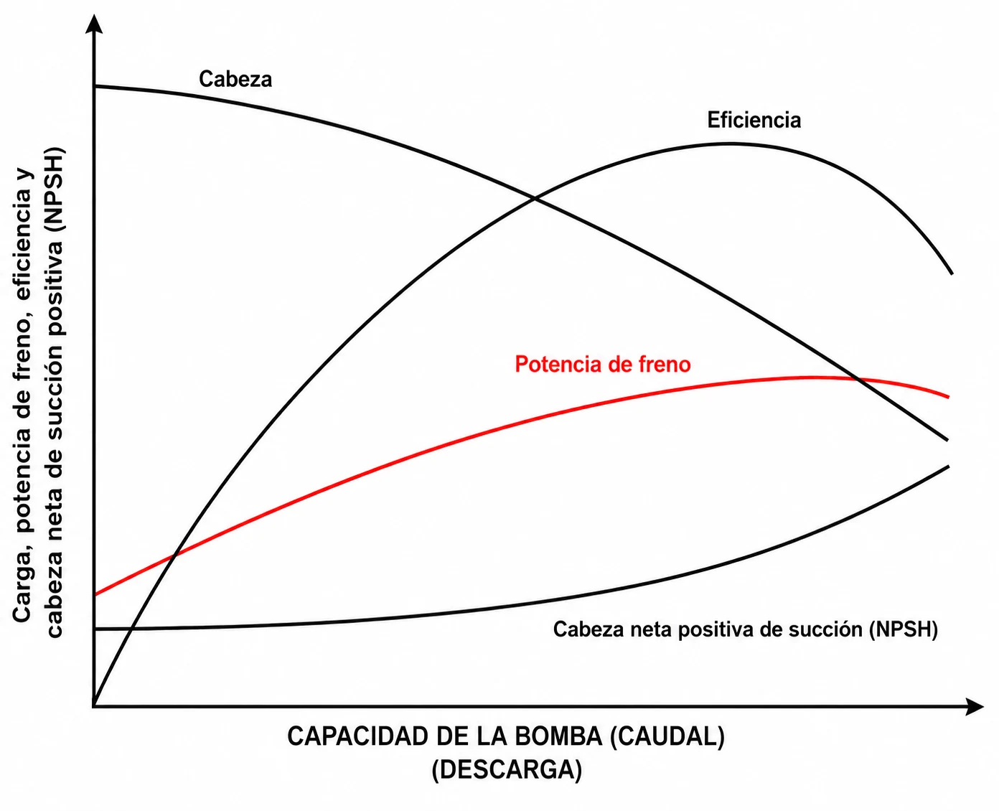
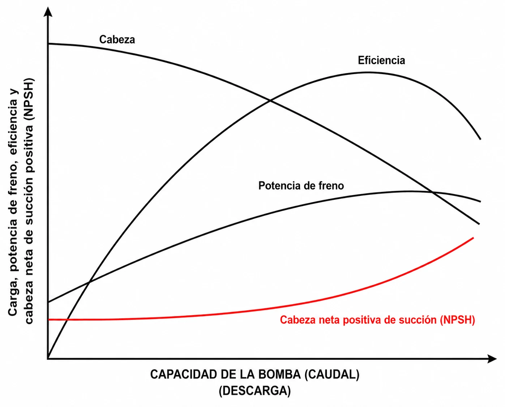
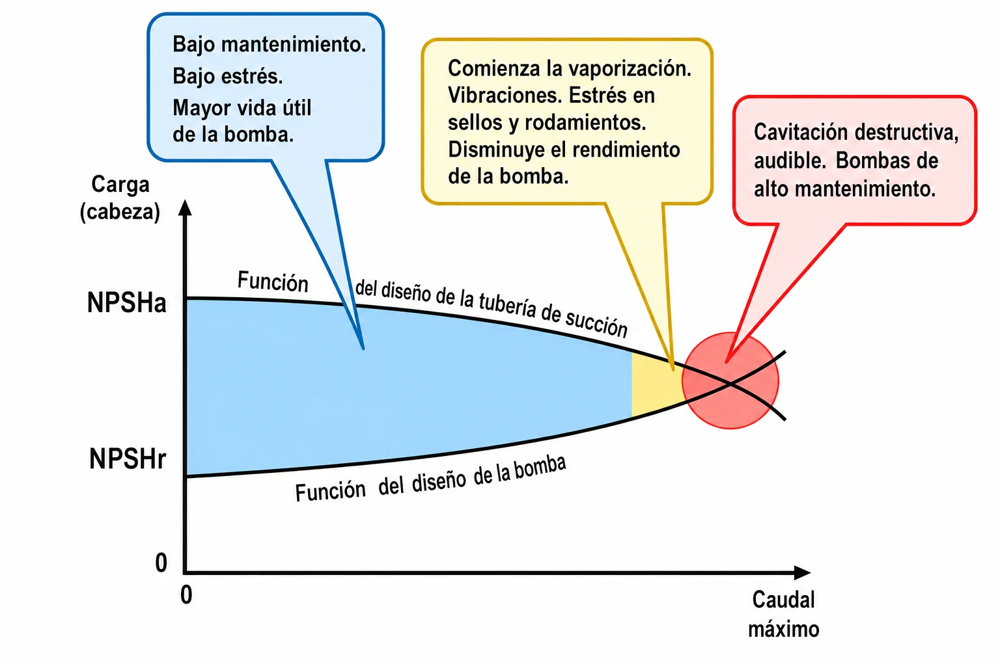
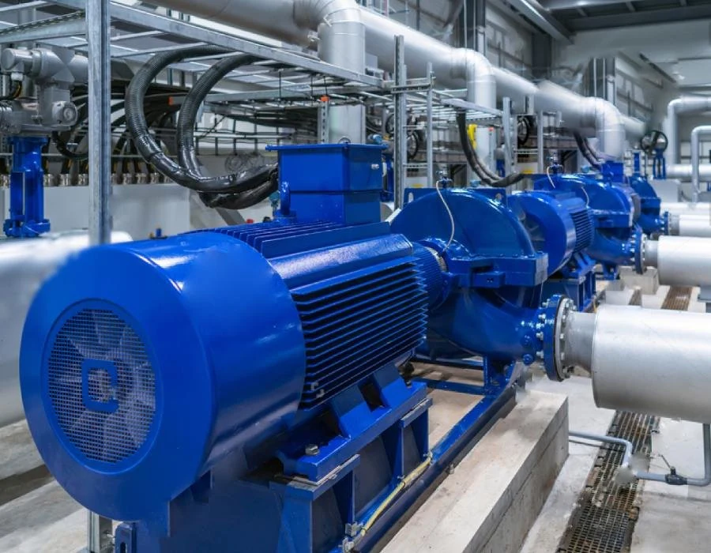
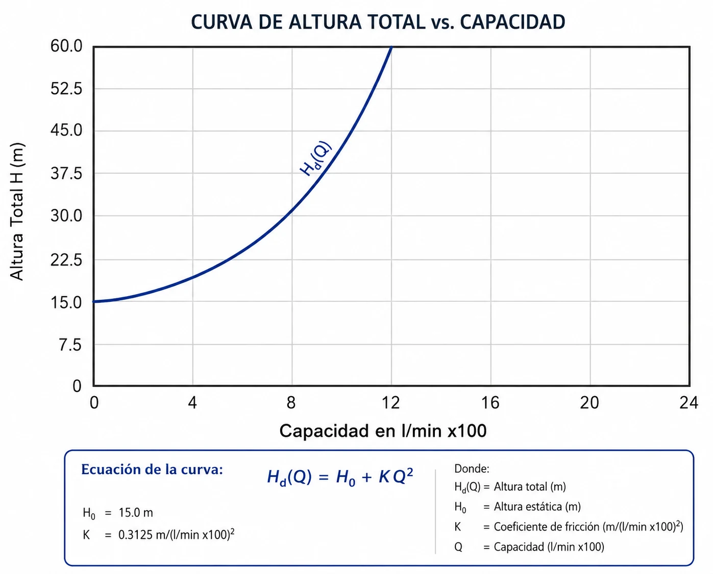

Bombas centrífugas
Principio de operación, curvas características, NPSH y cavitación, punto de operación, redes en serie y paralelo, selección, materiales y mantenimiento.
De la física del impulsor a la selección de la bomba
- 01Fundamentos y anatomíaPrincipio centrífugo, componentes, tipos de impulsores y velocidad específica.
- 02Curvas característicasCurva $H\text{-}Q$, eficiencia, potencia y el punto de mejor eficiencia (BEP).
- 03NPSH y cavitación$NPSH_d$ vs $NPSH_r$, mecanismo de daño, diagnóstico y soluciones.
- 04Sistemas y punto de operaciónCurva del sistema, control de caudal, operación en serie y paralelo.
- 05Selección y mantenimientoEficiencia energética, materiales, sellos, especificación y mantenimiento predictivo.
La bomba es la operación unitaria más repetida de su planta de pectina: mueve extracto ácido caliente, filtrado, etanol de precipitación y agua de servicios. Una bomba bien seleccionada da años de operación sin problemas; una marginal, paradas costosas y fallas catastróficas.
Fundamentos de bombeo
Energía rotacional → presión
Conversión de energía rotacional en presión y flujo mediante fuerzas centrífugas.
De qué está hecha
Impulsor, voluta, eje, cojinetes, sello mecánico, anillos de desgaste y carcasa.
Cómo responde
$H\text{-}Q$ (altura-caudal), $\eta\text{-}Q$ (eficiencia-caudal) y $P\text{-}Q$ (potencia-caudal).
Margen contra cavitación
Net Positive Suction Head: margen energético en la succión para prevenir cavitación.
La diferencia entre una bomba bien seleccionada y una marginal puede ser años de operación sin problemas versus paradas costosas y fallas catastróficas.
Fundamentos y anatomía
Cómo una rueda con paletas girando convierte energía mecánica en presión, y de qué partes depende esa conversión.
El principio centrífugo
El principio de operación de las bombas centrífugas es simple: impartir energía cinética a un fluido mediante rotación, y luego convertir esa velocidad en presión útil.
El fluido entra por el centro (ojo) del impulsor a baja velocidad y presión, y es lanzado hacia la periferia por las paletas.

El fluido entra axialmente por el ojo, es acelerado por los álabes del impulsor y sale por la voluta hacia la descarga.
Cuando el impulsor gira, las paletas arrastran el fluido desde el centro (ojo) hacia la periferia.
En el impulsor
Cuando el impulsor gira, las paletas arrastran el fluido desde el centro (ojo) hacia la periferia. La aceleración centrífuga genera un campo de presión donde la presión aumenta radialmente.
- El fluido entra axialmente con baja velocidad y presión.
- Es acelerado tangencial y radialmente por las paletas.
- Sale con alta velocidad (20-60 m/s típico) y presión moderada.
De velocidad a presión
El área creciente de la voluta desacelera el fluido gradualmente, convirtiendo energía cinética en presión según el principio de Bernoulli:
Un impulsor de 300 mm a 3000 rpm genera una aceleración centrífuga $a = \omega^2 r \approx$ 15 000 m/s² (¡más de 1500 g!), lo que explica cómo los líquidos ganan 50-200 m de altura en milisegundos.
La voluta de área creciente recupera la velocidad del fluido en forma de presión antes de la descarga.

Corte de una bomba end-suction: caja de empaques, eje, manguito, álabes, carcasa, anillos de desgaste, ojo, impulsor y boquilla de descarga.
Anatomía de una bomba centrífuga
Corazón de la bomba; discos con paletas que transfieren energía del eje al fluido. Geometría optimizada por CFD.
Carcasa espiral que colecta el fluido y convierte velocidad en presión. Forma evolvente crítica para la eficiencia.
Transmite torque del motor al impulsor. Acero inoxidable, 40-100 mm de diámetro, diseñado para velocidad crítica y deflexión mínima.
Soportan cargas radiales y axiales; vida > 40 000 horas con lubricación apropiada.
Previene fugas en la penetración del eje; el componente más delicado: 80 % de las fallas ocurren aquí.
Minimizan la recirculación interna, mantienen la eficiencia y son reemplazables.

De arriba a abajo: impulsor abierto, semiabierto, cerrado y cerrado de doble succión.
Tipos de impulsores
Paletas entre dos discos. Máxima eficiencia (85-92 %), mínima recirculación. Tolera pocos sólidos; común en agua limpia y químicos.
Paletas en un disco contra la carcasa. Eficiencia media (75-85 %), maneja algunos sólidos. El ajuste axial compensa el desgaste.
Paletas sin discos. Eficiencia menor (60-75 %), excelente para sólidos y fibrosos. Gran clearance previene atascamiento.
Velocidad específica
La velocidad específica ($N_s$) es un parámetro adimensional que caracteriza la geometría óptima del impulsor para unas condiciones dadas:
Donde $N = \text{rpm}$, $Q = \text{m}^3/\text{s}$ (en el BEP) y $H = \text{metros}$.
La eficiencia máxima ocurre en $N_s \approx 30\text{-}40$ (flujo mixto). Diseñar fuera del rango óptimo produce eficiencia pobre y operación inestable.
Flujo radial puro, impulsores angostos $D_2/D_1 \approx 2\text{-}3$. Alta presión / bajo flujo; múltiples etapas común.
Flujo mixto radial, balance óptimo $H\text{-}Q\text{-}\eta$. La mayoría de las aplicaciones.
Flujo mixto axial, impulsores anchos, presión moderada.
Flujo axial (propeller), baja altura / alto flujo, una sola etapa.
Las curvas características
Toda bomba se describe con cuatro curvas sobre el mismo eje de caudal: altura, eficiencia, potencia y NPSH requerido.

La curva de cabeza $H\text{-}Q$ (resaltada) junto a eficiencia, potencia de freno y NPSH sobre el mismo eje de caudal.
La curva H-Q
La curva altura-caudal ($H\text{-}Q$) define cómo responde la bomba a diferentes demandas de flujo.
Descendente: máxima altura a válvula cerrada (shutoff head), disminuye continuamente al aumentar el flujo.
FÍSICA SUBYACENTE
A $Q=0$, el impulsor solo genera presión centrífuga:
Con flujo, las pérdidas hidráulicas aumentan: $\;H = H_0 - k_1 Q - k_2 Q^2$.
Tipos de curvas H-Q
- Curva empinada ($dH/dQ$ grande): bomba «rígida», mantiene la presión ante cambios de caudal.
- Curva plana: bomba «suave», flujo estable; ideal para operación en paralelo.
- Curva con máximo: inestable entre shutoff y el máximo; puede oscilar (surging).
Modificaciones: recortar el impulsor aplana y baja la curva; la velocidad variable la desplaza verticalmente.
La pendiente de la curva $H\text{-}Q$ determina si la bomba es «rígida» o «suave».

La curva de eficiencia $\eta\text{-}Q$ (resaltada) tiene forma de campana con un máximo en el BEP.
Eficiencia
La eficiencia hidráulica cuantifica qué fracción de la potencia entregada al eje se convierte en energía útil del fluido:
Fricción, turbulencia, choque: 5-15 %.
Recirculación interna: 2-5 %.
Cojinetes y sellos: 1-3 %.
Fricción del impulsor con el fluido: 2-8 %.
Eficiencia: BEP e impacto económico
La curva $\eta\text{-}Q$ tiene forma de campana característica.
Eficiencia máxima de 70-90 % en el punto de mejor eficiencia.
Cero a $Q=0$, disminuye gradualmente al alejarse del BEP.
En operación 24/7, cada 1 % de mejora en eficiencia puede significar $10 000+/año en ahorro energético.
Operar lejos del BEP no solo desperdicia energía: aumenta cargas radiales, vibración y desgaste del sello. Dimensione la bomba para operar cerca del BEP en condiciones normales.

La curva de potencia de freno $P\text{-}Q$ (resaltada) muestra la demanda real sobre el motor a cada caudal.
Curva de potencia
Muestra la demanda real sobre el motor a diferentes flujos: crítica para la especificación correcta y la prevención de sobrecargas. El comportamiento depende de $N_s$:
- Radiales ($N_s$ bajo): la potencia aumenta con el flujo continuamente ($P \propto Q$ aprox.).
- Mixtas ($N_s$ medio): aumenta hasta cerca del BEP, luego aplana o cae ligeramente.
- Axiales ($N_s$ alto): potencia máxima a shutoff, disminuye con el flujo.
Factores que afectan la potencia
- Viscosidad: aumenta la potencia significativamente.
- Densidad: afecta proporcionalmente ($P \propto \rho$).
- Sólidos en suspensión: aumentan la demanda.
El motor debe tener un factor de servicio 1.15-1.25 sobre la máxima potencia esperada.
Instrumentación: el amperímetro del motor indica el punto de operación aproximado, útil para diagnóstico remoto.
Densidad, viscosidad y sólidos del extracto de pectina desplazan la curva de potencia hacia arriba.
NPSH y cavitación
El margen de presión en la succión decide si la bomba opera silenciosa durante años o se erosiona desde adentro.

La curva de NPSH requerido (resaltada, ascendente) crece con el caudal.
NPSH
El Net Positive Suction Head ($NPSH$) cuantifica el margen energético disponible para prevenir la cavitación, fenómeno donde la presión local cae por debajo de la presión de vapor formando burbujas destructivas.
Para líquidos calientes o volátiles, el $NPSH$ gobierna el diseño. Ejemplo: el etanol de precipitación a 78 °C tiene $P_{vapor} = 5.2$ m, dejando solo 3.5 m de NPSH disponible a nivel del mar.

El $NPSH_a$ (función del diseño de la tubería de succión) debe quedar siempre por encima del $NPSH_r$ (función del diseño de la bomba). La distancia entre ambos es el margen de seguridad.
NPSH disponible (NPSHa)
Es la energía disponible en la succión de la bomba por encima de la presión de vapor del líquido:
- $P_a$ = presión atmosférica o del tanque (Pa)
- $P_v$ = presión de vapor del líquido (Pa)
- $\gamma$ = peso específico del líquido (N/m³)
- $h_s$ = altura estática de succión (m)
- $h_f$ = pérdidas por fricción en succión (m)
NPSH requerido (NPSHr)
Es la energía mínima que necesita la bomba en la succión para funcionar sin cavitación. Características:
- Depende del diseño de la bomba.
- Proporcionado por el fabricante.
- Varía con el caudal de operación.
- Se obtiene de las curvas de la bomba.
Condición para evitar cavitación:
El $NPSH_r$ crece con el caudal: a mayor flujo, mayor margen de succión necesario.

Figura. Variación de la presión a lo largo de una bomba que cavita: el fluido entra (a); la presión cae por debajo de la presión de vapor en el impulsor y se forman burbujas (b); la presión aumenta hacia la descarga y las burbujas se condensan y colapsan (c); descarga (d).
El perfil de presión dentro de la bomba
El $NPSH$ se entiende mejor siguiendo la presión del fluido a lo largo de su recorrido por la bomba:
- (a) Entrada: el fluido llega a la presión de succión.
- (b) Ojo del impulsor: la aceleración hace caer la presión a su mínimo; si baja de $P_{vapor}$, nacen burbujas de vapor.
- (c) Hacia la descarga: el impulsor recupera presión y las burbujas colapsan violentamente contra el metal.
- (d) Descarga: el fluido sale a alta presión.
Las burbujas nacen en el punto de menor presión (b) y colapsan aguas abajo, en (c), donde erosionan el metal. El $NPSH$ protege el punto (b): si nunca baja de $P_{vapor}$, no hay burbujas que colapsen.

Secuencia destructiva: la burbuja de vapor colapsa (implosión) y forma un microchorro de líquido supersónico que erosiona la pared.
Mecanismo de daño por cavitación
La cavitación daña por el colapso violento de las burbujas de vapor cerca de superficies sólidas, no por la formación de burbujas en sí.
Factores agravantes
- Gas disuelto: reduce la violencia del colapso (efecto cushioning).
- Temperatura alta: acelera el daño (vapor más voluminoso).
- Materiales duros: resisten mejor, pero ninguno es inmune.
Ubicación del daño
- Entrada del impulsor: $NPSH_d$ insuficiente.
- Puntas de paletas en descarga: recirculación.
- Carcasa cerca del cutwater: desalineación del flujo.

En una sala de bombas real, cada metro de tubería, codo y filtro en la succión resta NPSH disponible.
Cálculo detallado de NPSHd
El cálculo preciso requiere atención meticulosa a cada componente, pues los márgenes son típicamente pequeños (2-5 m total). Desde un tanque presurizado:
Las pérdidas de succión $hL$ incluyen:
- Entrada del tanque ($K = 0.5$ típico).
- Tubería recta (minimizar $L$, maximizar $D$).
- Accesorios (evitar codos múltiples).
- Filtro/colador (factor de ensuciamiento 2×).
Factores críticos del NPSHd
- Velocidad de succión: mantener $< 1.5$ m/s.
- Efectos transitorios: el arranque genera una depresión momentánea.
- Temperatura variable: diseñe para la máxima temperatura posible.
En su proyecto, el extracto ácido caliente (hidrólisis a 80-90 °C) y el etanol de precipitación son los servicios con menor NPSH disponible: diseñe sus succiones con margen generoso.
Succiones cortas, de diámetro amplio y con pocos accesorios protegen el NPSH disponible.
NPSHr y la caída de presión
El $NPSH_r$ representa la energía mínima necesaria en la succión para evitar cavitación, determinado experimentalmente por los fabricantes según normas (ANSI/HI, ISO).
El fluido debe acelerar desde la velocidad de succión hasta la velocidad del ojo del impulsor; esto conlleva una caída de presión asociada:
Si la presión resultante $< P_{vapor}$, ocurre cavitación.
El fabricante mide el $NPSH_r$ como el punto donde la altura cae un 3 % por cavitación incipiente.
El NPSHr aumenta con…
$NPSH_r \propto Q^2$
Velocidades mayores en la succión exigen más margen.
$NPSH_r \propto N^2$
Duplicar las rpm cuadruplica el NPSH requerido.
Ojos pequeños
Ojos pequeños → velocidades altas → mayor $NPSH_r$.
Por eso reducir la velocidad con un variador (VFD) es una de las formas más efectivas de bajar el $NPSH_r$ cuando una bomba cavita en operación.
Factores de corrección del NPSHr
- Hidrocarburos: −0.3 m por liberación de gas disuelto.
- Agua caliente: +0.5 m por mejor liberación de vapor.
- Líquidos viscosos: +20-50 % por pérdidas adicionales.
- La curva $NPSH_r\text{-}Q$ es siempre ascendente.
Algunos fabricantes dan el $NPSH$ de 0 % cavitación = 1.2-1.5 × el $NPSH_{3\%}$. Úselo para servicios críticos.
La curva del fabricante se corrige según las propiedades del fluido bombeado.
Síntomas y diagnóstico de cavitación
Como «grava en hormigonera» o «palomitas de maíz», frecuencia 1-20 kHz. La intensidad aumenta con la severidad.
Picos aleatorios 1-50× la frecuencia de paso de paletas. Banda ancha de ruido que crece exponencialmente.
Altura y flujo caen progresivamente; la curva $H\text{-}Q$ se trunca en alto flujo. Eficiencia −5 a −30 %.
Erosión tipo panal en impulsor/carcasa: el metal parece «comido por termitas», concentrado en zonas de baja presión.
Prueba definitiva: aumentar el $NPSH_d$ temporalmente (elevar el tanque, enfriar el líquido, reducir el flujo). Si los síntomas desaparecen, la cavitación queda confirmada.
Soluciones a problemas de NPSH
- Elevar el tanque de suministro.
- Presurizar el tanque con gas inerte (N₂).
- Enfriar el líquido (10 °C menos = 2-3 m de NPSH).
- Minimizar pérdidas de succión (aumentar diámetro).
- Operar a menor flujo.
- Reducir la velocidad con VFD ($NPSH_r \propto N^2$).
- Instalar un inducer (pre-impulsor axial).
- Bomba vertical sumergida.
- Multietapa con primera etapa de bajo $NPSH_r$.
- Bombas en serie con booster dedicado.
- Cambiar a una bomba de diseño especial bajo $NPSH_r$.
Anticipe problemas en el bombeo de extracto ácido caliente y etanol de precipitación: diseñe con margen generoso desde el inicio.
Sistemas y punto de operación
La bomba no trabaja sola: el caudal real lo decide el cruce entre lo que la bomba ofrece y lo que el sistema de tuberías demanda.

La curva del sistema $H_d(Q) = H_0 + K Q^2$: parte de la altura estática y crece con el cuadrado del caudal.
La curva del sistema
Representa la energía (altura) que el sistema de tuberías demanda a la bomba para un caudal dado. Es la suma de la altura estática y las pérdidas por fricción:
Donde la altura estática es constante:
- $\Delta z$ = diferencia de elevación entre succión y descarga.
- $P_1, P_2$ = presiones en succión y descarga.
El componente de fricción
Las pérdidas por fricción crecen con el cuadrado del flujo:
- $k$ = coeficiente de resistencia del sistema (tuberías y accesorios).
- $Q$ = caudal volumétrico.
La curva del sistema es intrínseca a la instalación y representa la «demanda» energética, mientras que la curva de la bomba es la «oferta» energética.
Su forma parabólica ($H_{fricción} \propto Q^2$) significa que pequeñas variaciones en el caudal producen grandes cambios en las pérdidas.
La pendiente parabólica de la curva del sistema amplifica el efecto de los cambios de caudal.
El punto de operación
Es la intersección única donde la curva de la bomba ($H_{bomba}\text{-}Q$) se cruza con la curva del sistema ($H_{sistema}\text{-}Q$). Allí la bomba entrega exactamente la energía que el sistema demanda, y el sistema acepta el caudal que la bomba proporciona.
- La bomba se ajusta automáticamente a este punto.
- Es el único punto estable de funcionamiento para esa configuración.
- Cualquier cambio en la bomba o el sistema desplaza el punto de operación.
VELOCIDAD VARIABLE
Al reducir la velocidad de la bomba (de $n_1$ a $n_2$ a $n_3$), toda la curva de la bomba baja según las leyes de afinidad y el punto de operación se desplaza a menor caudal y altura, manteniendo la eficiencia.
Las leyes de afinidad explican por qué reducir un 20 % la velocidad ahorra casi un 50 % de potencia.
Ajustar el punto de operación
Aumenta artificialmente la resistencia del sistema, desplazando su curva hacia arriba y a la izquierda: reduce el caudal y sube ligeramente la altura. Sencilla pero ineficiente.
Modifica la curva completa de la bomba (leyes de afinidad), permitiendo operar a distintos caudales y alturas manteniendo la eficiencia. El método más eficiente energéticamente.
Recircula parte del flujo de descarga a la succión o a un tanque. Reduce el caudal efectivo, pero es ineficiente y puede calentar el fluido.
Reduce permanentemente el diámetro del impulsor, bajando la curva de la bomba. Se usa cuando la bomba está sobredimensionada.

En paralelo, las curvas se suman horizontalmente: $Q_1+Q_2+Q_3$ a la misma altura $H$.
Operación en paralelo
Operar bombas en paralelo aumenta confiabilidad y flexibilidad, pero requiere comprender las interacciones hidráulicas. Comparten un cabezal común de descarga, así que a igual presión cada bomba opera donde su curva corta la del sistema:
Condiciones de éxito:
- Curvas $H\text{-}Q$ similares (±5 % en el rango de operación).
- Curvas estables ($dH/dQ < 0$ siempre).
- Curvas planas ideales: minimizan el desbalance.
- $NPSH_d$ adecuado para el flujo individual máximo.
Problemas comunes
- Las bombas «idénticas» nunca lo son del todo.
- El desgaste diferencial se agrava con el tiempo.
- Una bomba puede forzar a otra fuera de su curva.
- Recirculación entre bombas si está mal diseñado.
Diseño robusto
- Manifolds simétricos minimizan el desbalance hidráulico.
- Instrumentación individual permite el diagnóstico.
- Configuración N+1 da mantenimiento sin parar la planta.

En serie, las curvas se suman verticalmente: la altura de dos bombas duplica la de una sola al mismo caudal.
Operación en serie
Las bombas en serie suman alturas manteniendo el mismo flujo, útil cuando la presión requerida excede la capacidad de las bombas individuales disponibles:
Aplicaciones típicas:
- Booster + principal para problemas de NPSH.
- Sistemas de alta presión: más económico que una bomba especial.
- Procesos con grandes cambios de elevación.
Consideraciones de diseño en serie
- La primera bomba debe manejar la presión de succión de la segunda.
- El rating de la carcasa es importante (presión acumulada).
- El $Q$ máximo lo limita la bomba de menor capacidad.
- Secuencia de arranque: primera bomba primero, estabilizar, luego la segunda.
El punto de operación de dos bombas en serie sube sobre la curva del sistema respecto a una sola.
Selección, materiales y mantenimiento
Elegir bien la bomba, el material y el sello, y mantenerlos, es lo que convierte un buen diseño en años de operación confiable.
Eficiencia energética en bombeo
La optimización de bombas ofrece un potencial significativo de ahorro energético en la industria, y el caso económico casi siempre es favorable.
Cómo ganar eficiencia
Mantener la bomba cerca de su Punto de Mejor Eficiencia (BEP) para maximizar el rendimiento energético.
Usar variadores de frecuencia (VFD) en lugar del estrangulamiento, para ahorros del 30-70 %.
Reducir la fricción interna y mantener los componentes en buen estado.
Sustituir bombas antiguas con eficiencias inferiores al 60 % por modelos modernos.
Son eslabones de una misma cadena: operación óptima → control de velocidad → mantenimiento → reemplazo → monitoreo continuo, clave para un retorno de inversión rápido.
Materiales de construcción
Económico, buena maquinabilidad, frágil. OK para agua neutra, no ácidos/alcalinos. Común en servicios de utilidad.
Más fuerte, soldable, se oxida (requiere protección). Económico para hidrocarburos.
Excelente resistencia general, estándar en la industria de alimentos. Cloruros >50 ppm problemáticos. Pulido sanitario disponible.
Superior resistencia a cloruros, mayor strength. Costo 1.5× SS316. Justificado en agua de mar y salmueras.
Resistencia química extrema, muy costoso. Para ácidos oxidantes/reductores.
Opción económica de protección: ebonita, PTFE, PFA. Cuidado con la delaminación.
Para su proyecto: SS316L en contacto con producto (extracto ácido, etanol de precipitación, CIP). Hierro fundido en utilidades. Considere dúplex si manejan salmueras.

Sellos mecánicos: dos caras ultraplanas (rotativa y estacionaria), resorte y elastómeros de soporte.
Sellos mecánicos
El sello mecánico previene fugas donde el eje rotativo penetra la carcasa: el componente más delicado y crítico para la confiabilidad.
Principio: dos caras ultraplanas (flatness <0.001 mm), una rotativa y una estacionaria, presionadas por resorte; un film líquido de 1-3 µm las separa y lubrica.
Configuraciones:
- Sello simple: una barrera, económico, OK para fluidos benignos.
- Sello doble: dos barreras con fluido buffer entre ellas. Cero emisiones, para fluidos peligrosos o valiosos.
Materiales de caras
- Carbón vs. cerámica (agua).
- Carbón vs. carburo de silicio (abrasivos).
- Carburo de silicio vs. carburo de silicio (alta temperatura).
CAUSAS DE FALLA
80 % por operación incorrecta (dry run, cavitación, golpe de ariete). Vida esperada: 2-5 años en servicio continuo limpio; 6-18 meses en servicios severos.
Para su proyecto: plan 11 suficiente en la mayoría de servicios; doble sello para el etanol de precipitación y el producto de pectina.
Especificación de bombas
Fluido exacto, concentración, rango de temperatura, % de sólidos.
Flujo (normal/mínimo/máximo), presión de succión/descarga, $NPSH_d$ calculado conservador.
Densidad, viscosidad, presión de vapor a temperatura. pH y cloruros si son relevantes.
Materiales de wetted parts, tipo de sello, orientación. Norma aplicable (ANSI, ISO, API).
Voltaje/frecuencia disponible, clasificación de área, factor de servicio. Enclosure (TEFC típico).
Switches de presión/flujo/temperatura requeridos. Transmisores para control y monitoreo.
No sobre-especificar: requerimientos innecesarios limitan los oferentes y aumentan el costo.
Mantenimiento predictivo
El espectro identifica problemas: 1× RPM = desbalance, 2× = desalineación, >3× = mecánico. La tendencia importa más que el valor absoluto.
Partículas de desgaste indican el componente (Fe = cojinetes, Cr = sellos, Si = contaminación). Agua >200 ppm degrada la lubricación.
Detecta problemas de cojinetes (>80 °C alarma), acoplamientos desalineados y motores sobrecargados. Barata y no invasiva.
Alejarse del BEP indica un problema de sistema. Aumento de presión = ensuciamiento; caída de flujo = desgaste.
Detecta cavitación incipiente antes del daño y fugas internas (válvulas check). Frecuencias >20 kHz.
Baseline en commissioning, monitoreo mensual de críticas / trimestral de otras, análisis de tendencias y reparación planificada. ROI típico 10:1.
Selección para aplicaciones específicas
- Bomba end-suction estándar.
- Impulsor cerrado de alta eficiencia.
- Hierro fundido, bronce o acero inoxidable.
- Materiales especiales: SS316L, Hastelloy, titanio.
- Sellos dobles con sistema de flush.
- Bombas magnéticas para cero fugas.
- Impulsor abierto o «recessed» antiatascamiento.
- Bajas velocidades (<1200 rpm).
- Materiales endurecidos; flush en el sello.
- Plan de sello con enfriamiento (API 682 Plan 53A/54).
- Soportes de carcasa tipo «centerline».
- Precalentamiento gradual antes del arranque.
La especificación debe considerar no solo el caudal y la altura, sino también la naturaleza física y química del fluido.